Auth
Approved application · approved logoEvery image below is an actual canonical PNG. Open an image for its full resolution. These are authored design scenes, not current-app browser captures.
Welcome back
sign-inActions and implementation pointers
Journl · Continue with Google · Continue with GitHub · Have an invitation?
apps/web/src/components/auth/sign-in.tsxapps/web/src/components/auth/sign-up.tsxapps/web/src/components/auth/invite-code-form.tsxapps/web/src/components/auth/reset-password.tsxapps/web/src/components/auth/better-auth-provider.tsxapps/web/src/components/auth/invite-sign-up.tsxapps/web/src/components/auth/auth-view.tsx

SHA256 c45ffd767da852437740801c7939ab60e5fa993f6e5d9fc4b66dfe56a1ad2115

SHA256 ff6c73cdc7d4a0753a8a024f81bfb7a783a8cf5fb7b3821e5f580429c15c8115

SHA256 fe2e029d98d8505c0008bbae02a1d2fcc64e5bd28056d0211d858508f5b06a3b

SHA256 b58cda46cf283aac3681377192a43cb9b22f1296a662ed3bcd04cd46a9566565
Enter your invitation
inviteActions and implementation pointers
Journl · Sign in instead · Check invite
apps/web/src/components/auth/sign-in.tsxapps/web/src/components/auth/sign-up.tsxapps/web/src/components/auth/invite-code-form.tsxapps/web/src/components/auth/reset-password.tsx

SHA256 69a9ab1e078547857163682d9c534779a23e08c4472aad9e930fc451896aa473

SHA256 5fe4b2cfc8566fdb0d5dcc190e92888c89b5a32e33acefe616985023f46d5faf

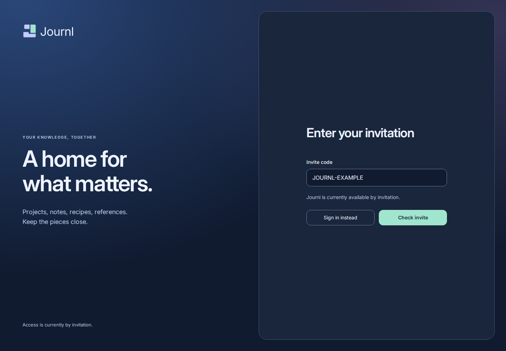
SHA256 8fe63d36724891a1f503844354036a0e9a4ae554cd02d50cd4c9502fcbd77d23

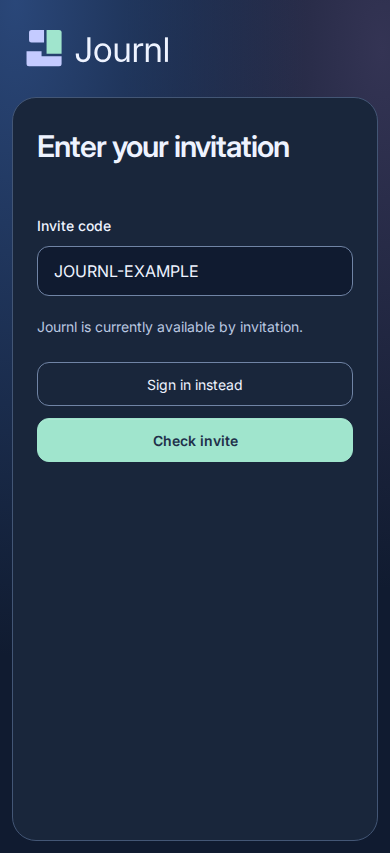
SHA256 c45094db231d9b57a73e42c2f84fd1a55e204948031319e698a1ff8189366df2
Create your account
sign-upActions and implementation pointers
Journl · Continue with Google · Continue with GitHub · Already have an account? Sign in
apps/web/src/components/auth/sign-in.tsxapps/web/src/components/auth/sign-up.tsxapps/web/src/components/auth/invite-code-form.tsxapps/web/src/components/auth/reset-password.tsxapps/web/src/components/auth/better-auth-provider.tsxapps/web/src/components/auth/invite-sign-up.tsxapps/web/src/components/auth/auth-view.tsx

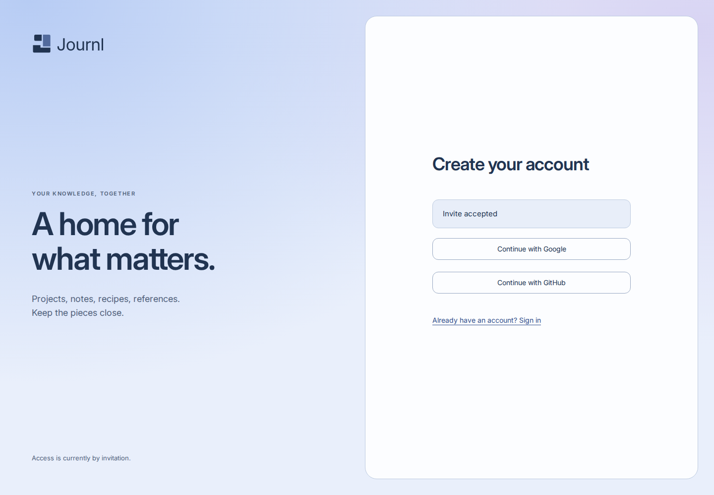
SHA256 71b00a929f9b9040f09f8719678e720fe50750d579dbc3794fb1481b0a6454d9

SHA256 07349ad7a0e9e18f1ec229d22a5e2b596152432f5b51f1a84038e62d55415fcb

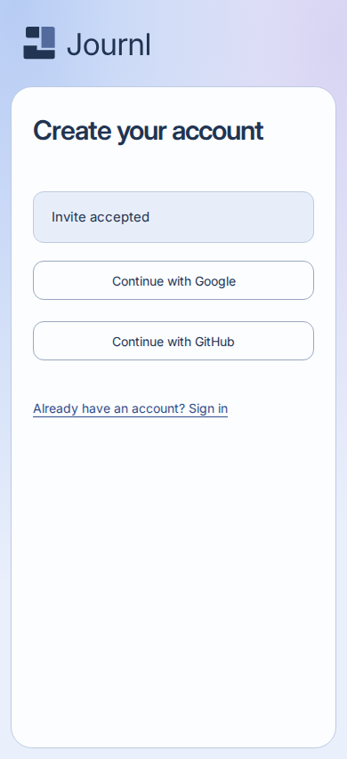
SHA256 c42140c3865c137e0e9750621b1ae123ea87b00c17bb182c4a48ca85659c1c18

SHA256 720ab1adc7415e3e21596e9898a339fb63f524ceb3f096c1d71398eee39beaaa
Reset your password
forgot-fullActions and implementation pointers
Journl · Back to sign in · Send reset link
apps/web/src/components/auth/sign-in.tsxapps/web/src/components/auth/sign-up.tsxapps/web/src/components/auth/invite-code-form.tsxapps/web/src/components/auth/reset-password.tsxapps/web/src/components/auth/auth-view.tsxapps/web/src/components/auth/better-auth-provider.tsxapps/web/src/components/auth/forgot-password.tsx

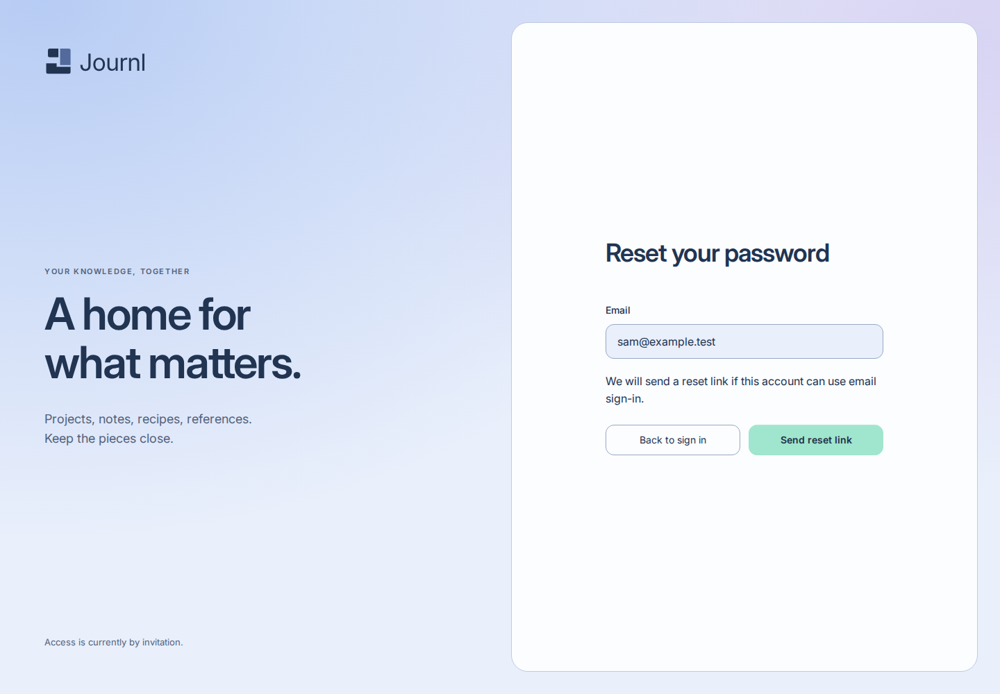
SHA256 c2909fe995a96db0574ec5d48cec804980157cb44cdf88c6631494425bf2873c

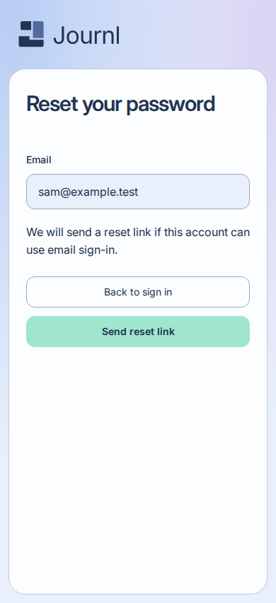
SHA256 1411a33c1c2e8941a9cdcf870d3025bc3197b6038f38ffbd6f6e9812f78a99e8

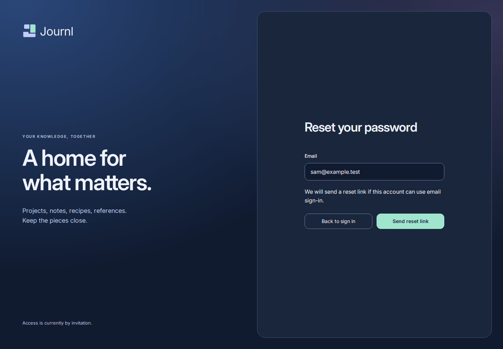
SHA256 5d7bba0dfeafbb8bd5fc2f94ab708fe1330ac44c00af58586c47c4326a587d59

SHA256 4f8c3ee0ac286a290517d2c469887edaab2d03a50bb154a78fd586af762b57d0
Choose a new password
reset-fullActions and implementation pointers
Journl · Show passwords · Reset password
apps/web/src/components/auth/sign-in.tsxapps/web/src/components/auth/sign-up.tsxapps/web/src/components/auth/invite-code-form.tsxapps/web/src/components/auth/reset-password.tsxapps/web/src/components/auth/auth-view.tsxapps/web/src/components/auth/better-auth-provider.tsx

SHA256 2d7ae37ed7bfb2c41adb6ab8b8d2fa8d1d41ff435ba632b8b1babcbf96600be1

SHA256 b0520d7084c32bcedeb90e4da92e3d135195b910765df7b01cafc46bba0cdda5

SHA256 477528a16235fd6e79a795238edb0ee07d03545b0df15e3057c0b36518d0eb9c

SHA256 07e08945e8b3f80cb9fff4745c96827f3c60151a0e712ab7d19f98ca874923ce
Check your inbox
verify-emailActions and implementation pointers
Journl · Back to sign in · Resend email
apps/web/src/components/auth/sign-in.tsxapps/web/src/components/auth/sign-up.tsxapps/web/src/components/auth/invite-code-form.tsxapps/web/src/components/auth/reset-password.tsxapps/web/src/components/auth/auth-view.tsxapps/web/src/components/auth/better-auth-provider.tsx

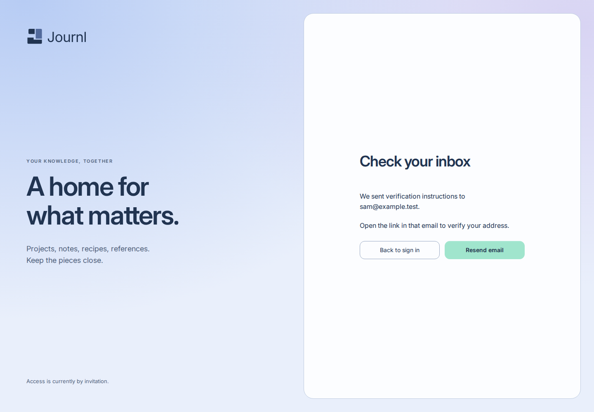
SHA256 a441ed9a0390bac8c08647128c5742965f379e84e027c86cee0a26614fbbd24c

SHA256 539957fa1c0b5c7dc12b6a09315b2370a3e398c84389a3077e2429df0119bf77

SHA256 10c82a4e80ff696f71f998d8c9d93be78f341e3d8a87edfd2f351539a49846b2

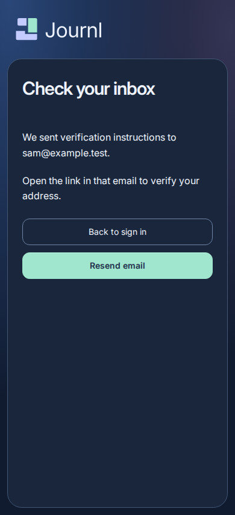
SHA256 a2eb3f9eb5068af76c05a96d2fe2e380bd5291d8fd8a448676a8836aa0e0a892
We could not complete sign-in
auth-errorActions and implementation pointers
Journl · Home · Enter invite
apps/web/src/components/auth/sign-in.tsxapps/web/src/components/auth/sign-up.tsxapps/web/src/components/auth/invite-code-form.tsxapps/web/src/components/auth/reset-password.tsx

SHA256 0b66ce7bc734e664d2a6e67bf3c55cba1b9597afea0e64095b970b2323817880

SHA256 965b0a23c5861b7ba29d9559b64d7d9b02e5e832c60fa0560da064ef7bffb4d9

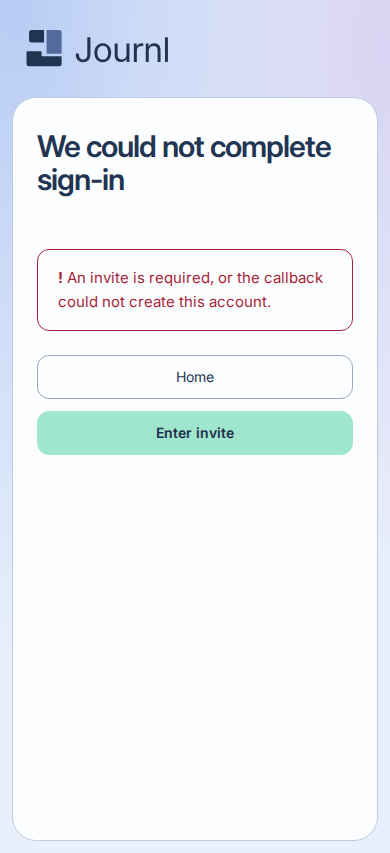
SHA256 b1607a047bc854770803ce0444a2028cde301b7693dc71ae5d3c53104b1d6d56

SHA256 971cfe9d369b9bd164c080e789fb5aa405af548b538748b64e1349c5cfb65485
This page is not here
not-foundActions and implementation pointers
Journl · Home · Enter invite
apps/web/src/components/auth/sign-in.tsxapps/web/src/components/auth/sign-up.tsxapps/web/src/components/auth/invite-code-form.tsxapps/web/src/components/auth/reset-password.tsx

SHA256 aaf273b0fdb579afea4beb7bbce13d769860d9aced852ff24d9abef57dd59a53

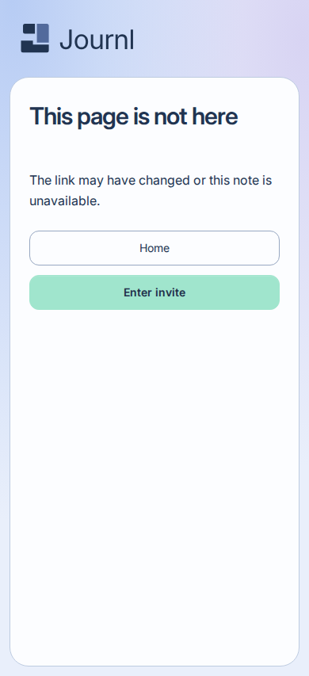
SHA256 55b94d5b0a7fa56a9306b8228332c315c458e3b947e48e9521a5960dadaf5eec

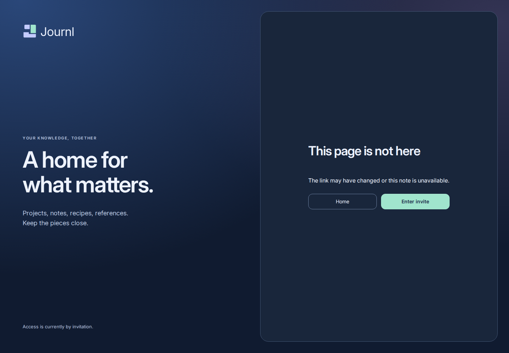
SHA256 1cd5d4177a739bf642ca35d19ba631081b588ebb893d30ee1592d19e122eb15e

SHA256 0adab7b7b3e6620da194e869b7db14453d9ce22ad9c8b04f6518d82389b6b488
Sign in · intercepted dialog
sign-in-modalActions and implementation pointers
× · Show password · Forgot password? · Have an invite? · Close sign in · Sign in
apps/web/src/components/auth/sign-in.tsxapps/web/src/components/auth/sign-up.tsxapps/web/src/components/auth/invite-code-form.tsxapps/web/src/components/auth/reset-password.tsx

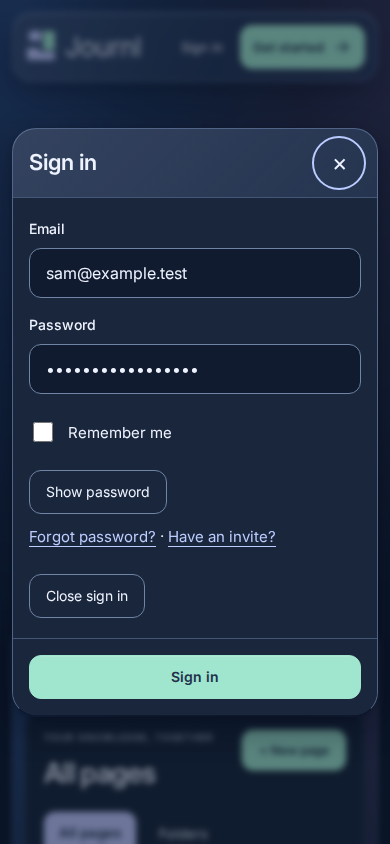
SHA256 175ff4c7f9652eb738491a3f2d4114ad6979b89ca09fa403c215dc2cb3b79fbb

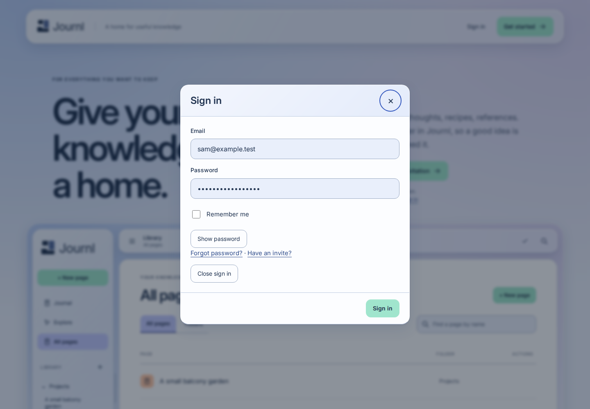
SHA256 247b183f83f8e1013e7ad14507cb6b7f5c5ee21e928a60ebab2fbf4231602d69

SHA256 bd575bacc01c255c2fb4c92b9808e9f213bb78acae242f6ff272e6b9d21c2a4f

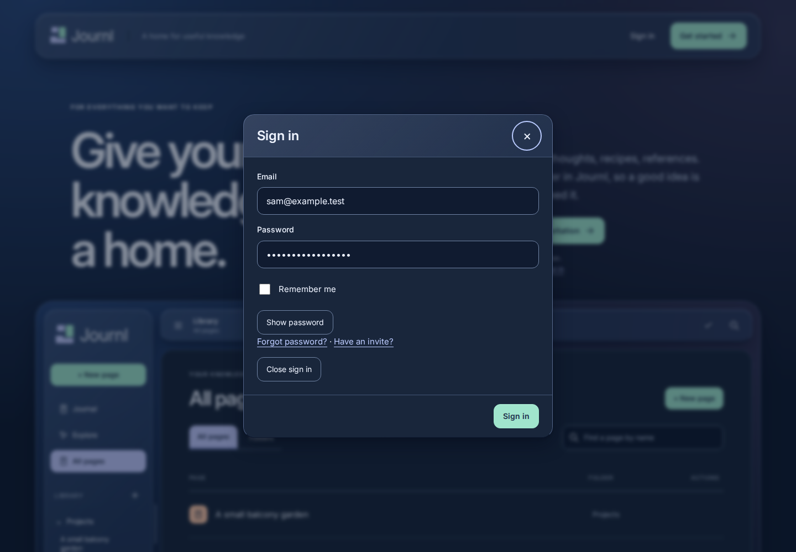
SHA256 c04bf5ee0bb282477d8033b4f9c8eff9021df9da1459dc679c2cc409830f2344
Sign in · pending
sign-in-pendingActions and implementation pointers
Journl · Show password · Sign in · Forgot password? · Have an invite?
apps/web/src/components/auth/sign-in.tsxapps/web/src/components/auth/sign-up.tsxapps/web/src/components/auth/invite-code-form.tsxapps/web/src/components/auth/reset-password.tsx

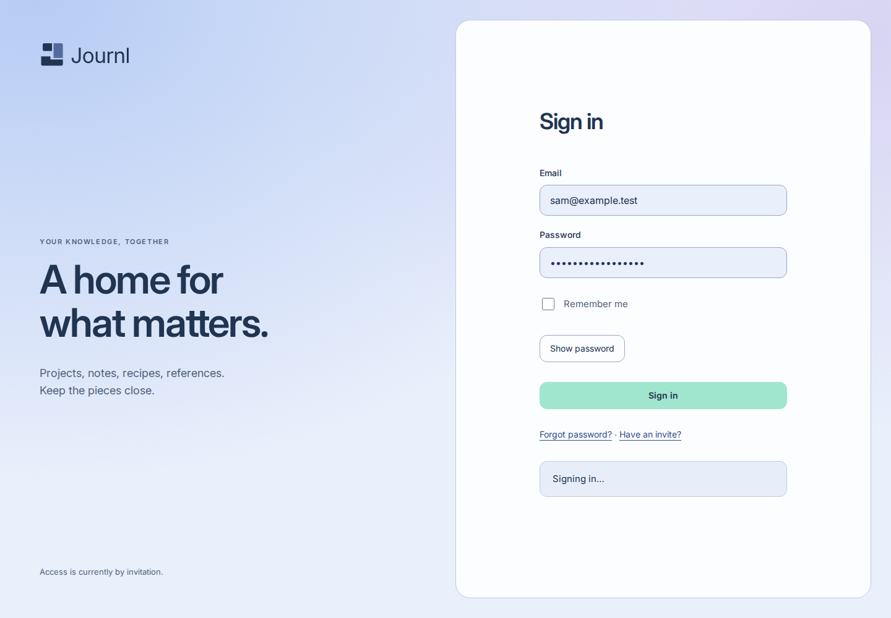
SHA256 93374f5401ebc64843c5f466ddfeaf9b84a000aae9c30b90138d631460118eaa

SHA256 91688efc53ca281978622c40505ce8eb317506f998cf9d06e12af74ba444cc1f

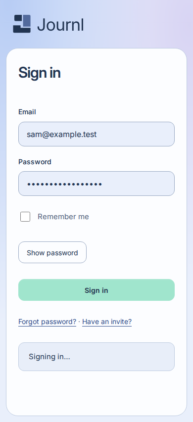
SHA256 57147e0aa8f9dddae64b9cf5a2226558eed45f3fd02ba7049cc18c45077f4f12

SHA256 9339d7cc99af2cbf9ad548d2169b95c5a735ad63c422f914a29655b720196122